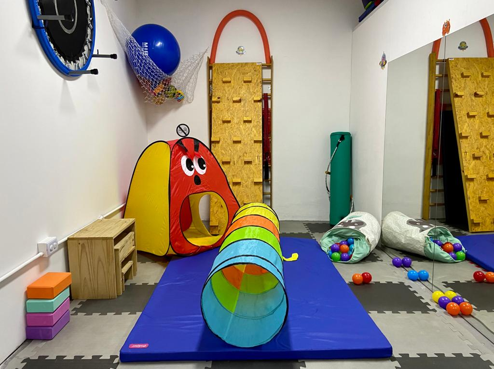
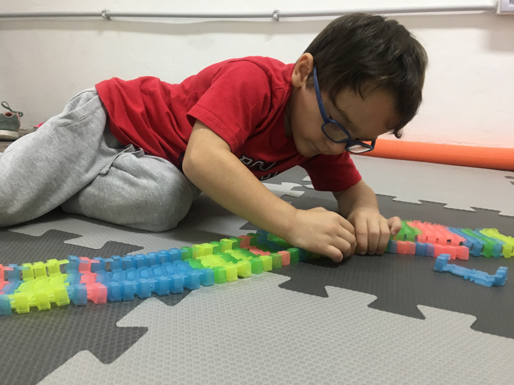
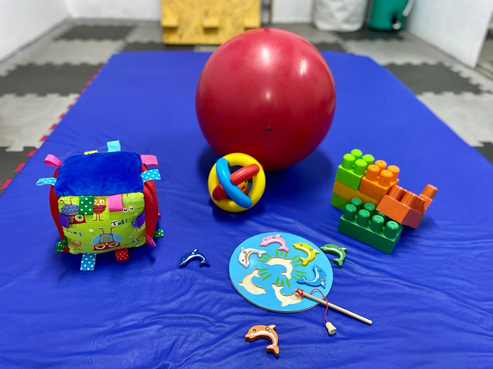
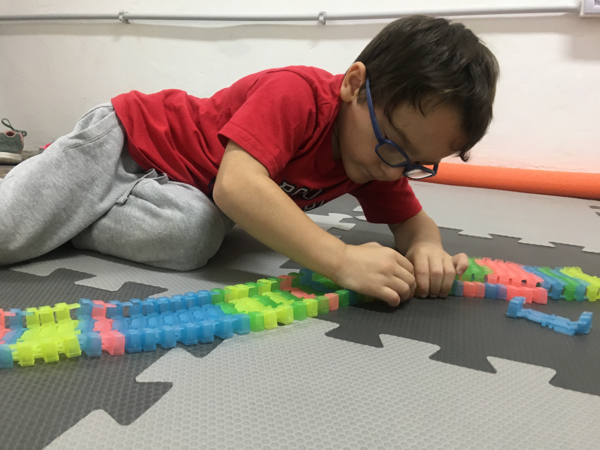
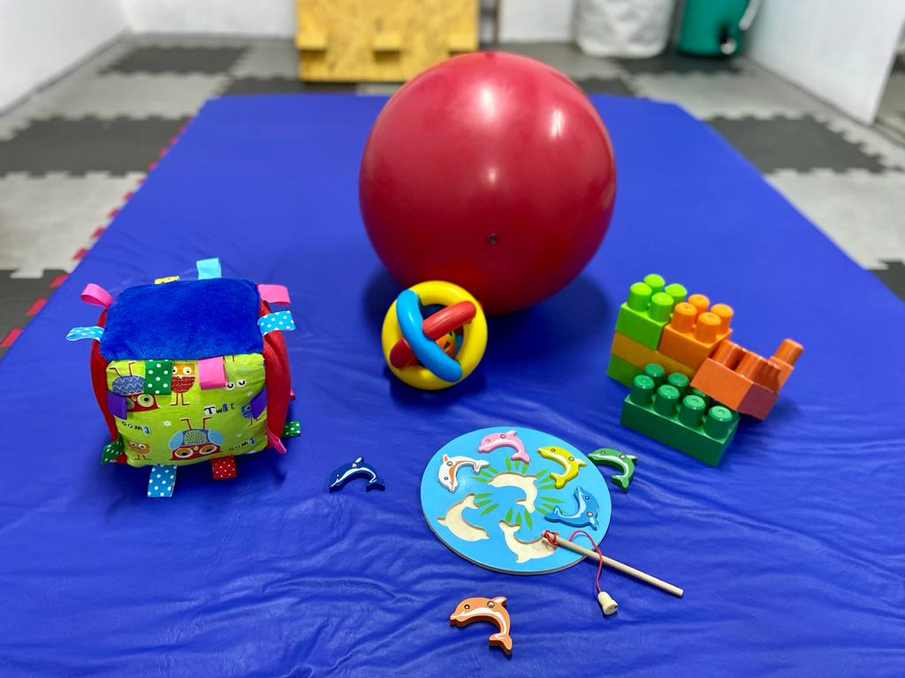

Consultorio de Kinesiología Neuro Pediátrica

Rol
El rol del kinesiólogo especializado en la atención de niños con trastornos neuromotores abarca varios aspectos. Por un lado, estimular y mejorar las habilidades motoras del niño para el mayor logro de su independencia en las diferentes aéreas de ocupación y la movilidad. Y por el otro, es el encargado de realizar evaluaciones tempranas que garanticen la prevención y detección de diversas alteraciones funcionales a fin de actuar preventivamente.Objetivo
Los objetivos de la terapia kinésica se orientan hacia la participación del niño en su medio ambiente a través de actividades significativas para el individuo y su familia (casa, colegio y comunidad). Los mismos se centran en el trabajo sobre estructuras y funciones corporales con deficiencia para disminuir el impacto en las actividades y participación a fin de optimizar la autonomía del niño en su ambiente.Funciones
Entre las funciones de esta disciplina se pueden mencionar:- Evaluar las capacidades a nivel de la postura y movilidad (habilidades funcionales) mediante test estandarizados según la edad.
- Implementar estrategias de tratamiento para mejorar el compromiso en la postura y movilidad, asesorara la familia en tareas que puedan implementar dentro de las actividades diarias.
- Analizar y diseñar un plan de tratamiento considerando los requerimientos de cada niño en cuanto a: alteraciones de postura y movimiento, teniendo presente los sistemas de clasificación de la CIF sensoriales, neuro-muscular, musculoesquelético y cardiorespiratorio.
- Establecer objetivos en conjunto con la familia.
 


